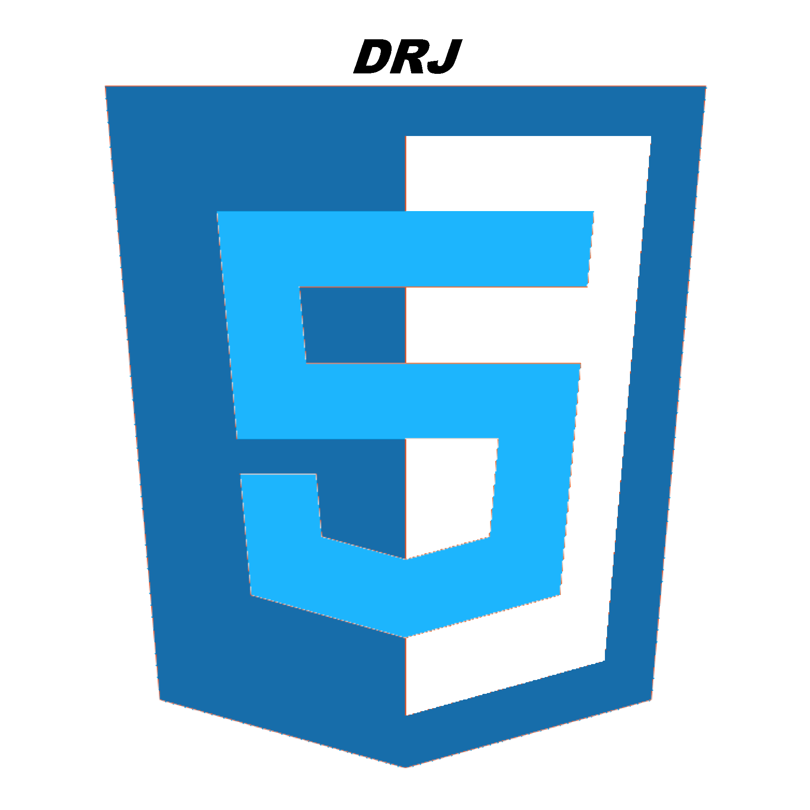
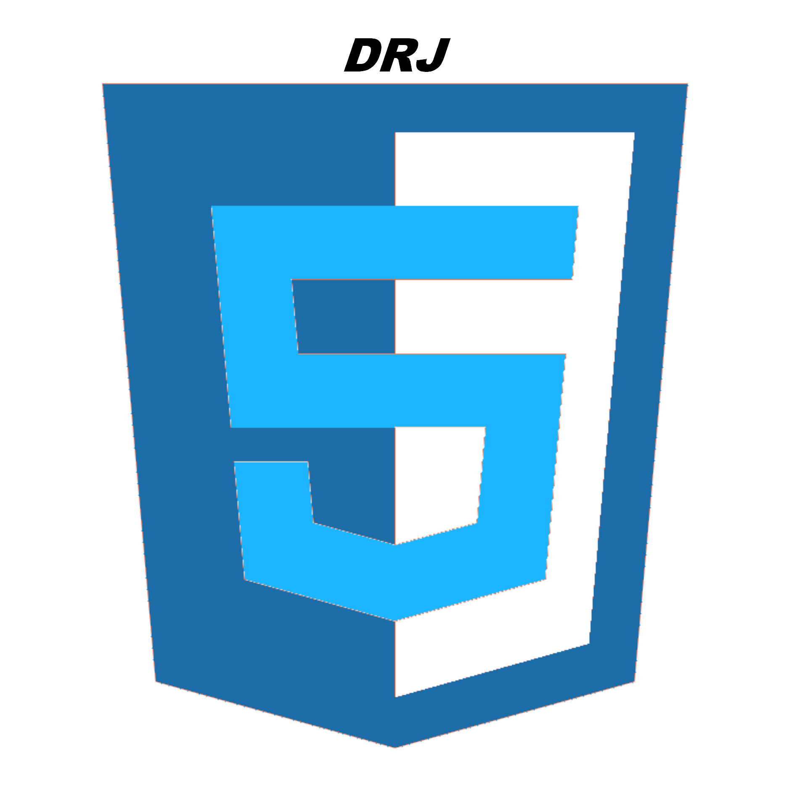

Actividade 6
Transforma la imagen de la actividad 5 (logo personal) en formato PNG. Mediante la aplicación de edición de imágenes Gimp (u otro si quieres) deberás conseguir crear las siguientes versiones del logo:
-
- Formato GIF con color indexado.
 -
- Formato JPG bajando la calidad al 80%.
 -
- Formato PNG minúsculo para utilizarlo como favicon en la página web (insertalo también en la página).